Hvar
Hvar is the glamorous one — sun-drenched, lavender-scented, and famous for having more sunny days than almost anywhere else in Europe. The harbor fills with everything from small fishing boats to superyachts, all set against a hillside crowned by the Fortica fortress, where a cannon still looks out over the bay and the view stretches across the Pakleni Islands. The old town below is a warren of stone stairways, flower-draped balconies, and alleys that end unexpectedly in a restaurant terrace or a view of St. Stephen's bell tower. Hvar rewards early risers and night owls alike — quiet harbor light at sunrise before the crowds arrive, and yachts glowing against the dark water after dinner. In between, there's a good local brewery, dinner tucked into a hillside alley, and enough stone steps and bougainvillea to make every walk photogenic. It's polished without losing its charm — equal parts postcard island and genuinely lived-in Dalmatian town.
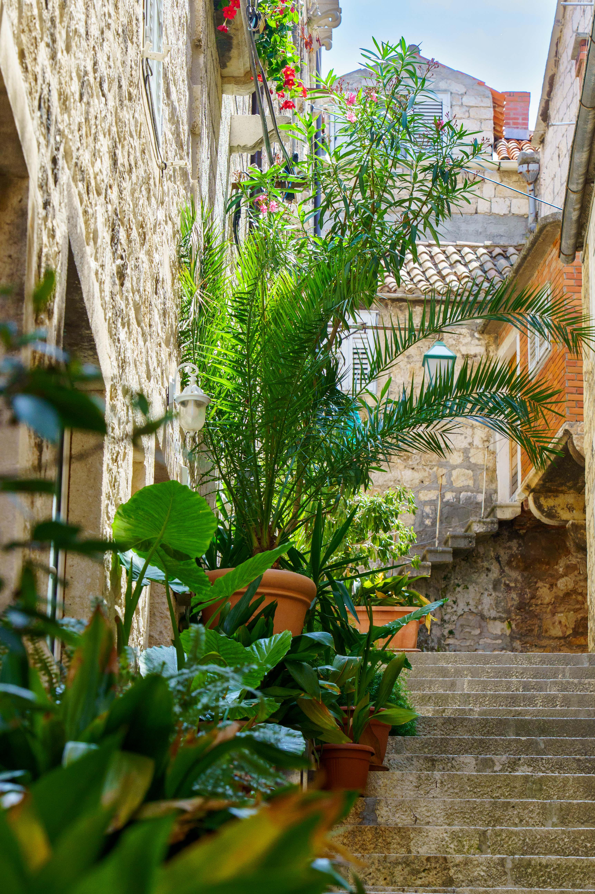
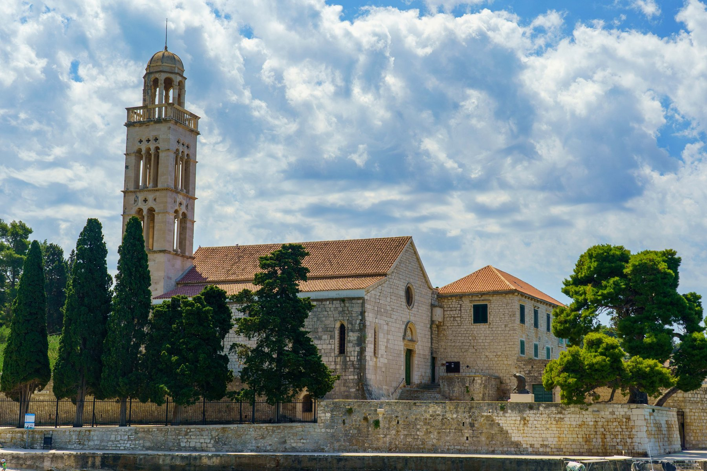
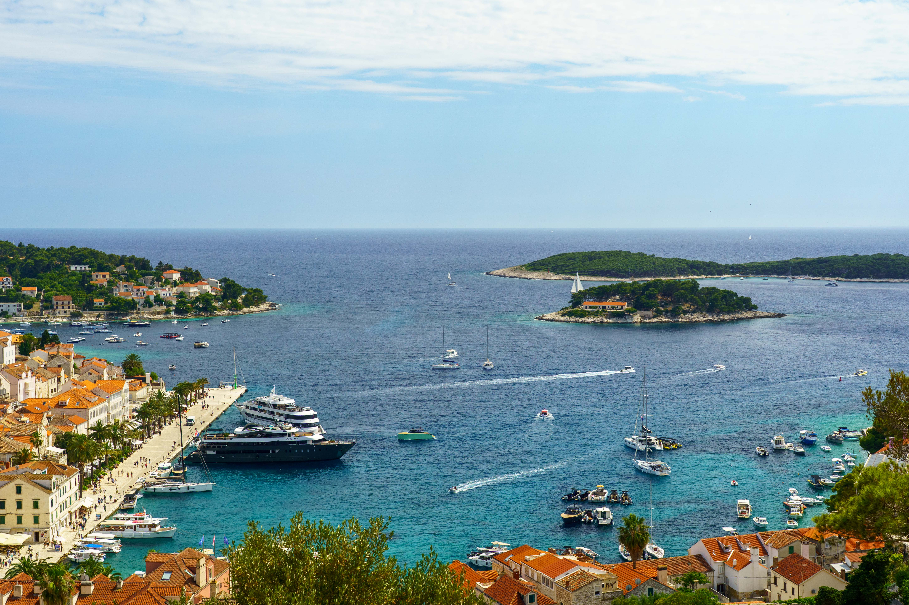
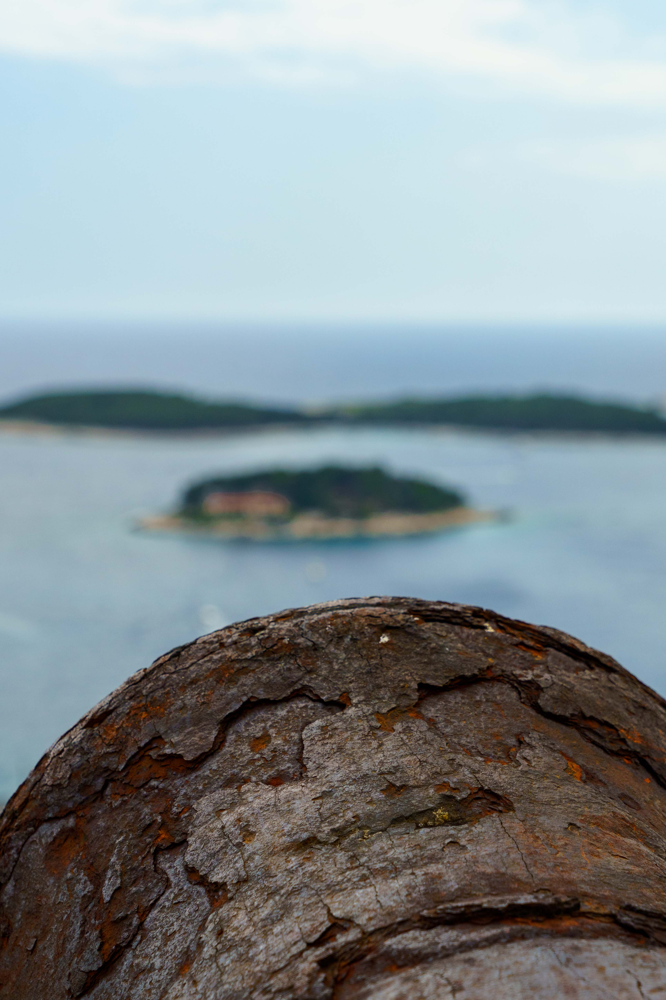
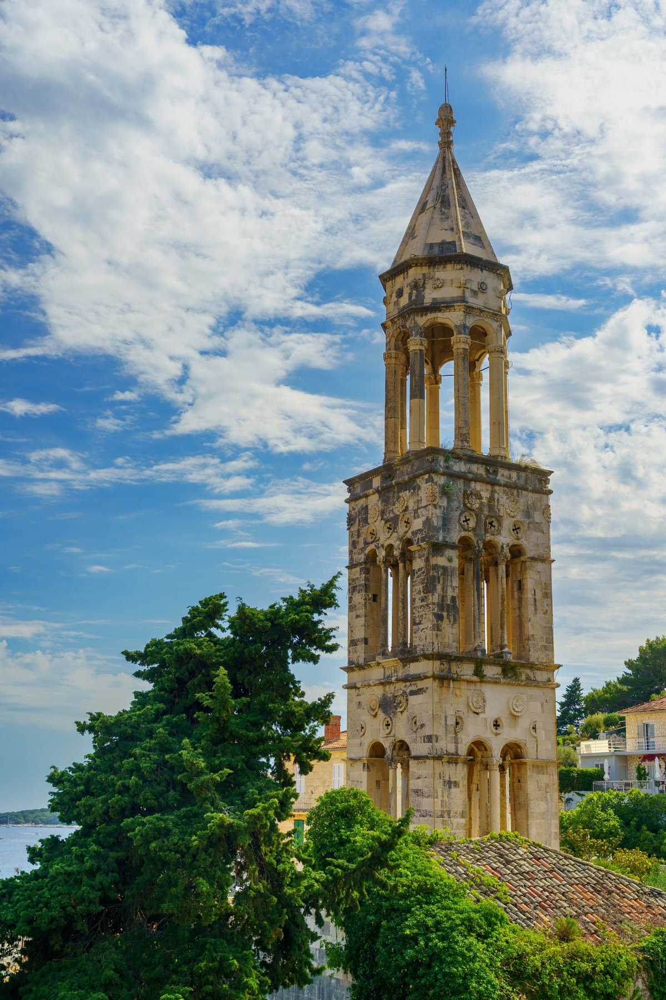
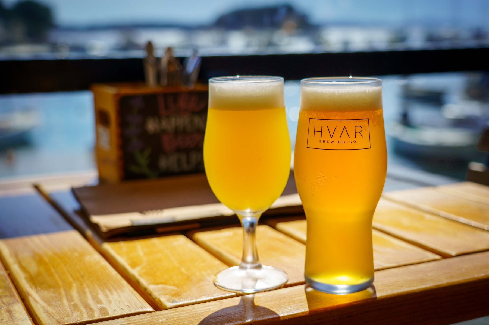
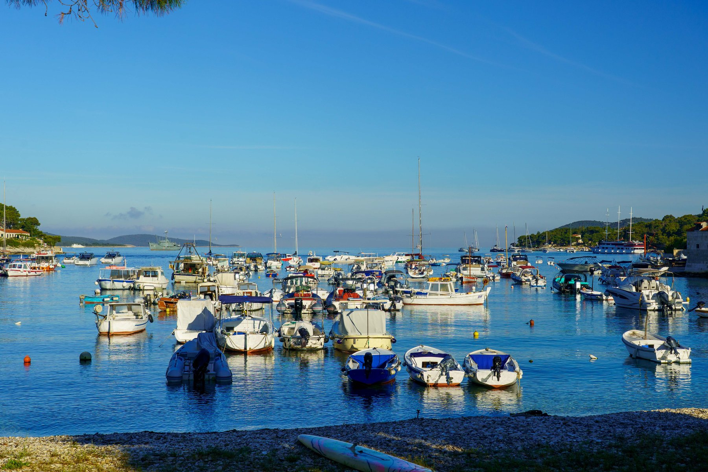
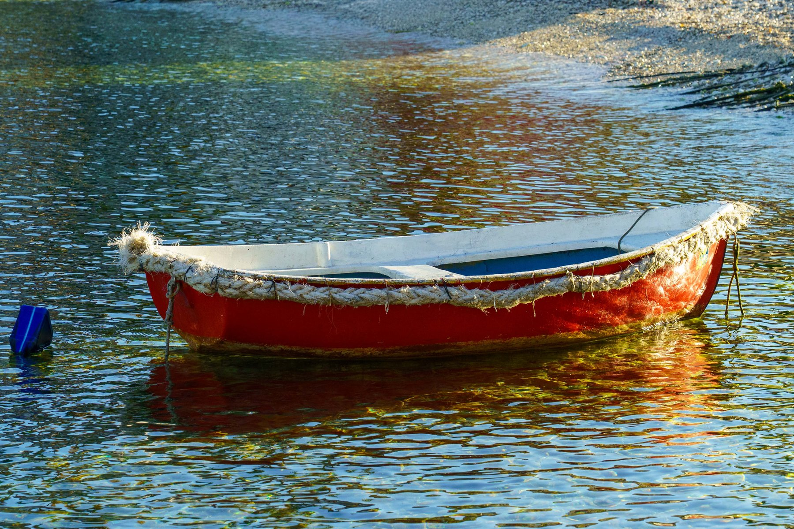
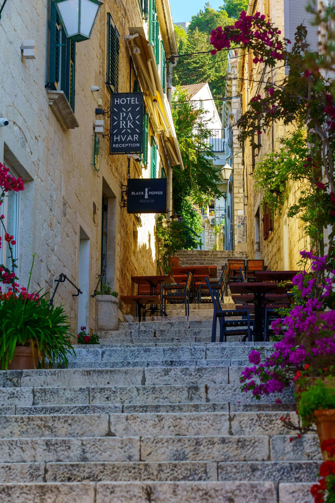
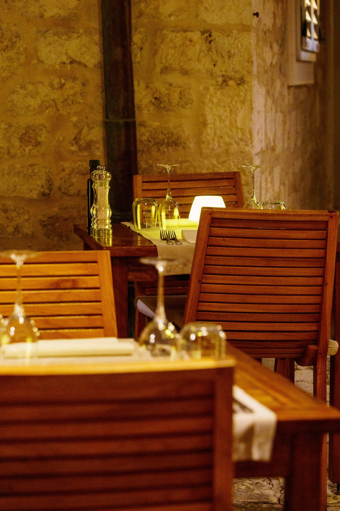
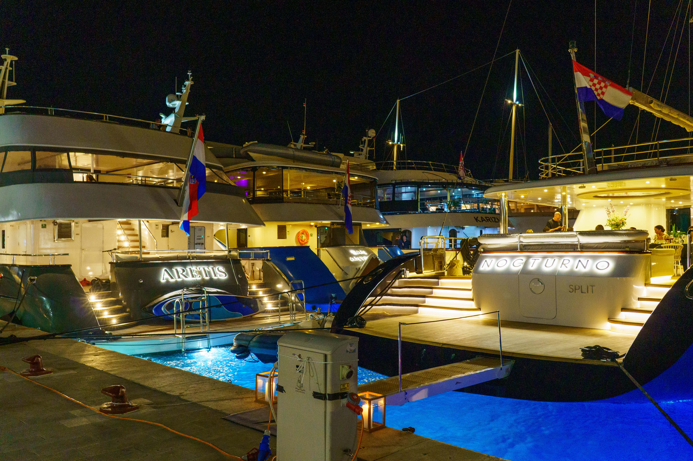